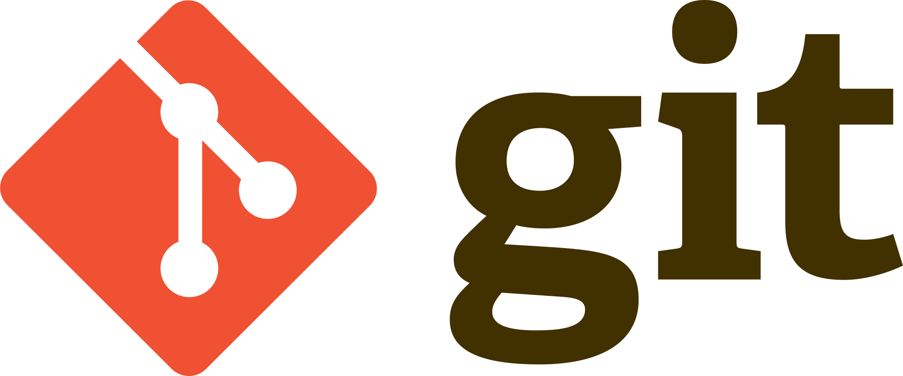

What i've learned in the first week
Again,this time let me write in bahasa so it make me easier and on point. Hari pertama di Hacktiv8, semangat gugup campur aduk. Karena saya ingin masuk hactiv8 dari tahun 2016. Ya hampir 2 tahun lalu yah? hahaha. Anyway, di hari pertama ini, saya mulai belajar mengenai hal-hal dasar untuk pengembangan aplikasi. Ada Visual Code Editor (HTML&CSS), git sama terminal pada sistem unix. Saya juga dikenalkan dengan banyaknya tugas dihacktiv8, rata-rata perminggu ada belasan tugas. Salah satu tugasnya ya ini, buat portofolio web sederhana pake html dan css, yang harus dibuat dalam 2 hari saja.
Code Editor adalah suatu software desktop yang ditujukan untuk menulis perintah-perintah yang akan diproses dan dilakukan oleh komputer. Ada beberapa Code Editor terkanal seperti VSCode, Atom, Sublime, Notepad++ tetapi di Hacktiv8 sangat direkomendasikan untuk menggunakan VSCode. Walaupun berat dalam menjalankan code editor ini, sejauh ini saya sangat nyaman menggunakannya. Beberapa keunggulan yang saya rasakan adalah built-in terminal, explorer file yang mudah, serta terdapat beberapa trik untuk memudahkan dalam menulis kode.
Hal kedua yang saya pelajari adalah git. Singkatnya, git adalah version control system untuk para developer yang sedang berkolaborasi dalam suatu project. Git bekerja dengan menggunakan terminal serta platform git pada web yaitu GitHub. Git memungkinkan developer untuk saling membagi tugas tanpa mengesampingkan versi kode yang sudah ada sebelumnya.
Selanjutnya ada terminal, terminal ini berfungsi untuk memberikan perintah langsung pada komputer. Terminal ini hanya terdapat pada sistem operasi unix yaitu MacOS dan Linux. Instruktur saya sangat merekomendasi penggunaan dua OS tersebut, bila komputer pada awalnya windows, maka harus diganti dengan linux. Terdapat beberapa command sederhana yang sudah diajarkan di Hacktiv8 di antaranya :
- cd {folder path} : untuk menuju ke suatu direktori
- cd .. : untuk keluar dari suatu direktori
- mkdir {nama folder} : untuk membuat folder baru
- touch {nama file} : untuk membuat file baru
- rm -rf {nama folder/file} : untuk menghapus folder/file
Hal terakhir di minggu pertama, saya belajar tentang html dan css. Sangat banyak yang bisa diperdalam pada materi ini. Saya diperkenalkan pada dokumentasi untuk html & css di situs w3schools.com . Untuk menguji seberapa jauh pemahaman, Hacktiv8 meminta muridnya untuk membuat web portfolio serta blog sederhana dengan menggunakan HTML dan CSS. Inilah salah satu tugasnya hehehe.